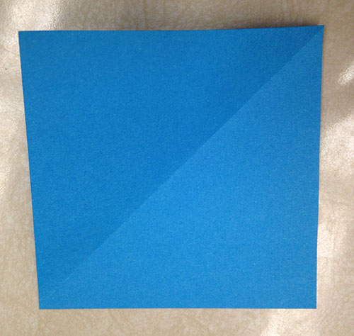
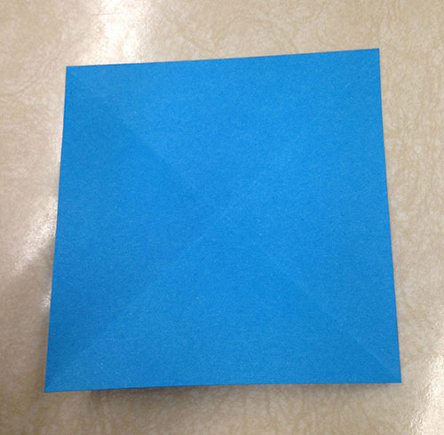
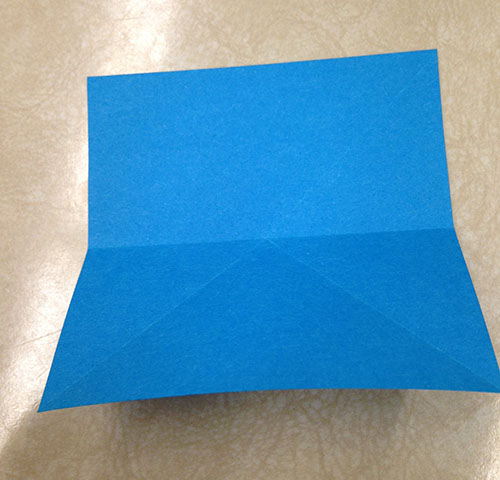
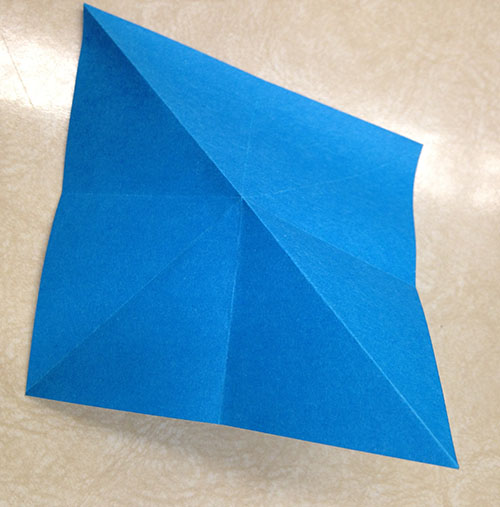

Base 2
This is a pretty simple base, used as a starting point to make more complex things.
This particular base will be used to make the bell flower.
Start with a square piece of paper, colour side up.
Fold the bottom right corner up to the top left.

Unfold. You should have something like this.
Fold the bottom left corner up to the top right.
Unfold. You should have something like this.
Fold the bottom edge up to the top edge.
Unfold. You should have something like this.
Fold the left edge to the right edge.

Unfold. You should have something like this.

Crease your diagonal folds the opposite way, so that they point upward.
Making these folds should enable you to collapse the edges in on themselves,
as shown.

You should end up with something like this.

And that is your completed base!